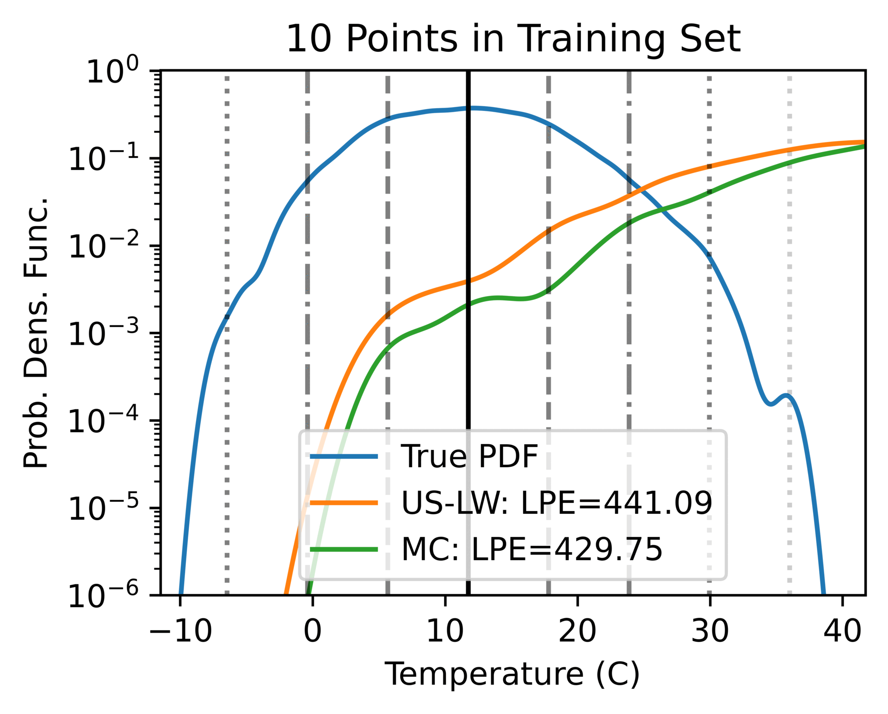
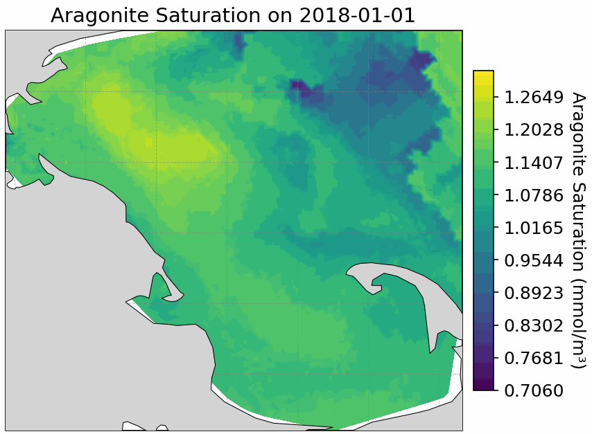

Research Projects
-
Active Data Selection for Extreme Weather Events
-
(Submitted)
B. Champenois and T. P. Sapsis.
Likelihood-Weighted Active Selection of Training Data for Improved Extreme Weather Event Prediction.
-
S. Guth, B. Champenois, and T. P. Sapsis.
Application of Gaussian Process Multi-Fidelity Optimal Sampling to Ship Structural Modeling.
34th Symposium on Naval Hydrodynamics, June 2022.

-
Data-Driven Modeling of Ocean Acidification
-
B. Champenois, C. Bastidas, B. LaBash, and T. P. Sapsis.
Data-Driven Modeling of 4D Ocean and Coastal Acidification in the Massachusetts and Cape Cod Bays From Surface Measurements.
AGU JGR: Biogeosciences, June 2025.
-
B. Champenois and T. P. Sapsis.
Machine Learning Framework for the Real-Time Reconstruction of Regional 4D Ocean Temperature Fields from Historical Reanalysis Data and Real-Time Satellite and Buoy Surface Measurements.
Physica D: Nonlinear Phenomena, January 2024.

-
Modeling Ocean Flow from Lagrangian Drifter Observations
-
B. Champenois and T. P. Sapsis.
Reconstructing Ocean Flow from Observed Lagrangian Trajectories.
IEEE Oceans Conference, June 2025.
-
A. Papalia, C. Dawson, B. Champenois, et al.
A Roadmap for Climate-Relevant Robotics Research.
arXiv, July 2025.
-
C. Xia, B. Champenois, F. Campuzano, and R. Mendes.
Drifter Challenge: A Low-Cost, Hands-On Platform for Teaching Ocean Instrumentation and Sensing.
Oceanography: Ocean Education, 2025.